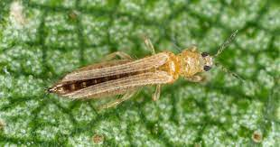

Diseases and pests
- Caterpillars
- Grasshoppers
- Bacterial leaf spot
- Anthracnose
- Downy Mildew
- Root rot
- stemphylium leaf spot
- Crikets
- Caterpillars
Thrips
 Thrips is a deadly pest.Thrips feed under the leaf folds and in the protected inner leaves near the bulb.
This enables thrips to cause a stunted growth on onions making them small in size.
Treatment for thrips
Thrips as a pest can be avoided by;By spraying using insecticidal soaps; acephate(orthene),bifenthrin,imidacloprid.
Neck rot
 Neck rot is a disease that attacks the neck and bulbs of
an onion.
Neck rot is a disease that attacks the neck and bulbs of
an onion.The bulbs are usually first affected at the neck.
Although the decay can spread downwards to affect the whole bulb.
It is a fungal disease.
Treatment for neck rot
By spraying using mancozeb.By spraying using chlorothalonil.
Purple blot
 Purlpe blot affects the leaves of an onion.
Purlpe blot affects the leaves of an onion.It leaves purple markings on the leaves of an onion.
It makes leaves of onions wilt.
Treatment for purple blot
By spraying using chlorothalonil.By spraying using mancozeb.